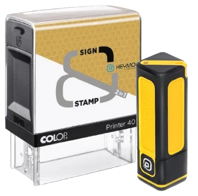

Ce que dit la loi
La profession est définie par l'article 1er de la loi du 7 mai 1946, qui a institué l'Ordre des Géomètres-Experts. C'est ce texte qui fonde le monopole du bornage.
« Le géomètre-expert est un technicien exerçant une profession libérale qui, en son propre nom et sous sa responsabilité personnelle :
1° Réalise les études et les travaux topographiques qui fixent les limites des biens fonciers et, à ce titre, lève et dresse, à toutes échelles et sous quelque forme que ce soit, les plans et documents topographiques concernant la définition des droits attachés à la propriété foncière, tels que les plans de division, de partage, de vente et d'échange des biens fonciers, les plans de bornage ou de délimitation de la propriété foncière ;
2° Réalise les études, les documents topographiques, techniques et d'information géographique dans le cadre des missions publiques ou privées d'aménagement du territoire, procède à toutes opérations techniques ou études sur l'évaluation, la gestion ou l'aménagement des biens fonciers. »
Loi n° 46-942 du 7 mai 1946, article 1erDeux conséquences pratiques
Une mission de service public. C'est le point le plus important, et il vaut d'abord pour le bornage. Le géomètre-expert n'est pas le conseil d'une partie : il est investi par la loi d'une mission de service public. Dans un bornage, il est tenu à l'égard de tous les riverains à la fois, et sa proposition de limite doit être la même quel que soit celui qui l'a appelé et qui le paie.
Le monopole. Aucun autre professionnel — ni architecte, ni notaire, ni bureau d'études, ni entreprise de topographie — ne peut fixer la limite d'une propriété privée. Un plan de bornage établi par quelqu'un d'autre n'a pas de valeur.
La responsabilité personnelle. Le géomètre-expert engage son nom. Il ne rend pas un simple avis technique : il produit un acte qui va s'imposer aux propriétaires signataires et à leurs ayants cause — héritiers comme acquéreurs successifs.
Une profession encadrée
Le titre est protégé. Nul ne peut l'employer ni exercer les missions réservées sans être inscrit au tableau de l'Ordre, et cette inscription s'accompagne d'obligations permanentes.
- Un diplôme et un stageFormation d'ingénieur ou de niveau équivalent, suivie d'un stage professionnel encadré avant l'inscription au tableau de l'Ordre.
- L'inscription au tableau de l'OrdreNul ne peut porter le titre ni exercer les missions réservées sans y figurer. L'inscription est publique et vérifiable.
- Une déontologieIndépendance, impartialité, secret professionnel. Le géomètre-expert ne peut pas être le conseil d'une seule partie dans un bornage : il est tenu à l'égard de tous les riverains.
- Une assurance obligatoireLa responsabilité civile professionnelle est obligatoire et contrôlée par l'Ordre.
- La publication des travauxLes opérations de bornage et de délimitation sont portées au portail national Géofoncier, consultable par la profession et par les tiers.
- Une formation continueLe droit foncier, l'urbanisme et les techniques de mesure évoluent en permanence. La mise à jour des compétences est une obligation professionnelle.
Une profession réglementée, et les autres
Mesurer n'est pas dire la propriété.
Beaucoup de professionnels savent lever un terrain, en dresser le plan, implanter un ouvrage ou calculer un volume — et le font très bien. Mais ces activités ne sont pas réglementées : elles ne donnent pas qualité pour fixer une limite de propriété.
Le géomètre-expert fait tout cela, et il est en outre le seul à pouvoir établir un procès-verbal de bornage ou de reconnaissance de limites, un document d'arpentage, ou un plan délimitant les lots d'une copropriété (Cour de cassation, 1re chambre civile, 29 juin 2022). L'état descriptif de division et le mesurage loi Carrez, eux, ne lui sont pas réservés — mais confiés à un géomètre-expert, ils s'appuient sur une mesure qui engage sa responsabilité.
Autrement dit : pour un plan de terrain, plusieurs professionnels conviennent. Pour tout ce qui touche à la limite et à la propriété, seul le géomètre-expert a qualité.
Les questions qu'on nous pose
Le géomètre-expert est-il un officier public ?
Il n'est pas officier public au sens du notaire ou du commissaire de justice (l'ancien huissier) : c'est un professionnel libéral, investi par la loi d'une mission de service public et titulaire d'un monopole légal sur la délimitation de la propriété foncière. Ses procès-verbaux de bornage sont des actes de nature contractuelle, qui engagent les propriétaires signataires.
Comment vérifier qu'un géomètre-expert est bien inscrit ?
L'Ordre des Géomètres-Experts publie le tableau de ses membres. Vous pouvez y retrouver le nom du professionnel, son numéro et son cabinet. Notre inscription figure au pied de chaque page de ce site.
Peut-on contester le travail d'un géomètre-expert ?
Oui. Un procès-verbal de bornage ne s'impose qu'aux personnes qui l'ont signé et à leurs ayants cause — héritiers et acquéreurs successifs — pas aux tiers. En cas de désaccord, la voie judiciaire permet de faire trancher la limite par le tribunal, qui désigne alors un géomètre-expert. Par ailleurs, l'Ordre peut être saisi sur le terrain déontologique.
Qu'est-ce que Géofoncier ?
C'est le portail national de la profession, sur lequel les géomètres-experts publient les opérations de délimitation qu'ils réalisent. Il permet de savoir si un terrain a déjà fait l'objet d'un bornage, et par quel confrère — ce qui évite souvent de refaire un travail déjà fait.
Documents signés numériquement
Le Cabinet ABELLO valide certains documents (devis, attestations) avec un tampon numérique certifié — sans impression ni scan.
Solution utilisée : Keymo, tampon numérique français conforme eIDAS. Disponible chez plusieurs revendeurs :
